()
Director :
Cast :
Famous Quote : " "-
()
Director :
Cast :
Famous Quote : " "-
()
Director :
Cast :
Famous Quote : " "-
()
Director :
Cast :
Famous Quote : " "-
()
Director :
Cast :
Famous Quote : " "-
()
Director :
Cast :
Famous Quote : " "-
()
Director :
Cast :
Famous Quote : " "-
()
Director :
Cast :
Famous Quote : " "-
()
Director :
Cast :
Famous Quote : " "-
()
Director :
Cast :
Famous Quote : " "-
()
Director :
Cast :
Famous Quote : " "-
()
Director :
Cast :
Famous Quote : " "-
()
Director :
Cast :
Famous Quote : " "-
()
Director :
Cast :
Famous Quote : " "-
()
Director :
Cast :
Famous Quote : " "-
()
Director :
Cast :
Famous Quote : " "-

ARRIVAL
()
94%
Director :
Cast :
Famous Quote : " "-

THE DARK KNIGHT RISES
(2012)
8.3 87%
Director :
Cast :
Famous Quote : " "-

THE HURT LOCKER
()
Director :
Cast :
Famous Quote : " "-

BIRDMAN
()
Director :
Cast :
Famous Quote : " "-

COCO
(2017)
8.3 97%
Director :
Cast :
Famous Quote : " "-

AVENGERS : INFINITY WAR
(2019)
8.3 94%
Director :
Cast :
Famous Quote : " "-
LOST IN TRANSLATION
()
95%
Director :
Cast :
Famous Quote : " "-
MOONLIGHT
(201)
98%
Director :
Cast :
Famous Quote : " "-

SPIDER-MAN : INTO THE SPIDER-VERSE
(2018)
8.4 97%
Director :
Cast :
Famous Quote : " "-

DJANGO UNCHAINED
(2012)
8.4 87%
Director :
Cast :
Famous Quote : " "-
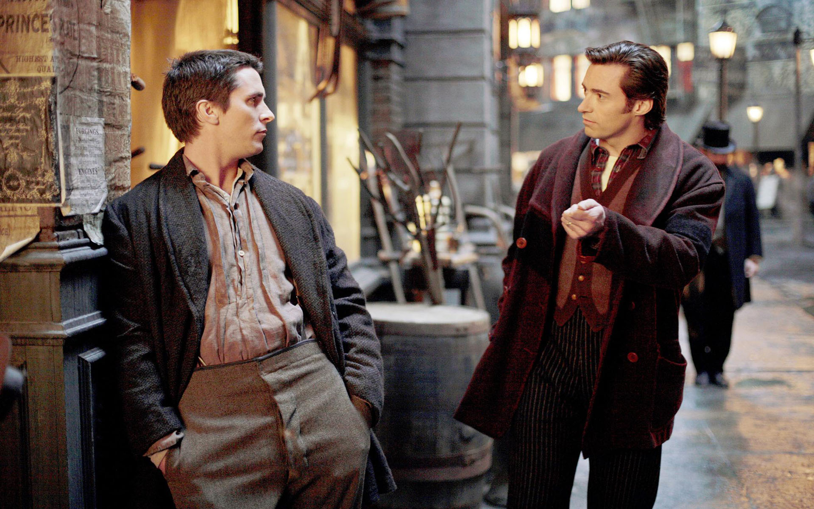
THE PRESTIGE
(2006)
Thriller/Mystery 8.5 76%
Director : Christopher Nolan
Cast : Hugh Jackman, Christian Bale
Famous Quote : "Man's reach exceeds his imagination."- Robert Angier
This was less a period thriller than a stealth sic-fi. Nolan's film tells the tricky tale of two rivals magicians practicing their art in late-Victorian london. Both are so committed to this rivalry that they make sacrifices that will bring them fame but with terrible consequences.
AMELIE
(2001)
Romance/Rom-com 8.2
Director : Jean-Pierre Jeunet
Cast : Audrey Tautou
Famous Quote : "At least you'll never be a vegetable - even artichokes have hearts."- Amelie Poulain
Despite being caught in her imaginative world, Amelie, a young waitress, decides to help people find happiness and guess what on her journey she finds love. No girl other than Audrey Tautou could play this role so perfectly. Only French film to make part in this list.
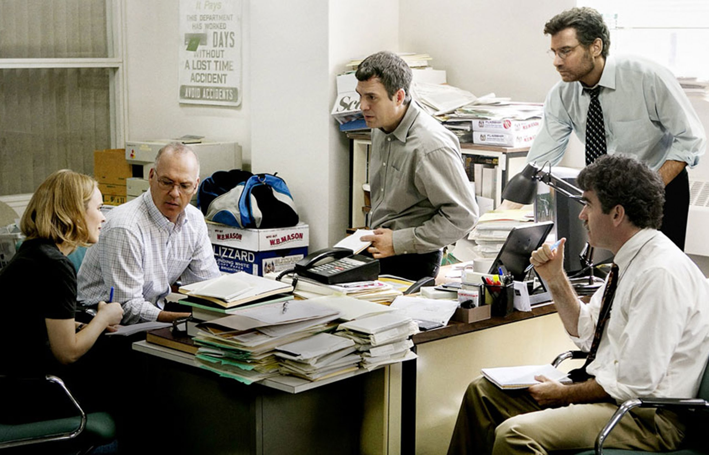
SPOTLIGHT
(2015)
Drama/History 8.1 97%
Director : Tom McCarthy
Cast : Mark Ruffalo, Rachel McAdams, Liev Schreiber, Michael Keaton
Famous Quote : "He is the lucky one, He is still alive."- Mitchell Garabedian
Spotlight is a old-style journalism triumphs in the story of the real-life team who knocked on doors and scoured the cuttings library to reveal a scandal that may have begun centuries ago. By the way, it was Academy's Best Picture.
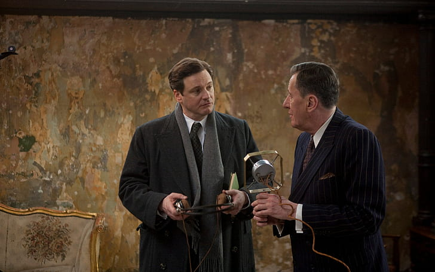
THE KING'S SPEECH
(2010)
Drama/Historical Drama 8 94%
Director : Tom Hooper
Cast : Colin Firth, Geoffrey Rush, Helena Bonham Carter
Famous Quote : "Please don't smoke. I believe sucking cigarette smoke into your lungs will kill you."-
A quarter of the world's population looked to England for leadership before W W II. But its own people doubted the competence of their stammering King.
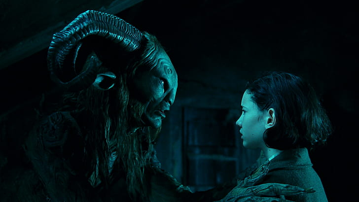
PAN's LABYRINTH
(2006)
Fantasy/War 8.2 95%
Director : Guillermo Del Toro
Cast : Juana Baquero, Ariadna Gil, Sergi Lopez
Famous Quote : "Her father, the King, always knew that the princess' soul would return perhaps in another body, in another place, at another time and he would wait for her, until he drew his last breath, until the world stopped turning..."- Pan
There's an earthy, primal feel to his fairy-world here, alien and threatening rather than gasp-inducing and 'magical'. Only Spanish-Language Movie here.

NO COUNTRY FOR OLD MEN
(2007)
Thriller/Western 8.1 93%
Director : Coen Brothers
Cast : Javier Bardem, Josh Brolin, Tommy Lee Jones
Famous Quote : "The point is there ain't no point."- McCarthy
The Coens' squeeze us without mercy in a vise of tension and suspense. Javier Bardem makes an awesome villian.

INTERSTELLAR
(2014)
Sci-fi/Adventure 8.5 72%
Director : Christopher Nolan
Cast : Matthew McConaughey, Anne Hathaway, Jessica Chastain
Famous Quote : "Love is the only one thing that transcend time and space"- Brand
From the effects of gravity to emotional implication of time dilation, it mixes science and sentiment to great effect. And it has a sarcastic robot, too.
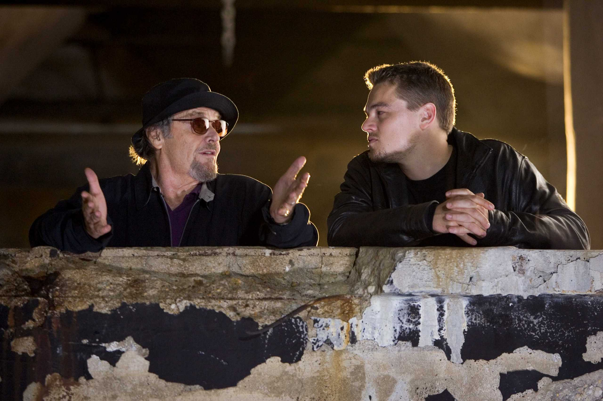
THE DEPARTED
(2006)
Thriller/Crime 8.5 91%
Director : Martin Scorsese
Cast : Jack Nicholson, Matt Damon, Leonardo De Caprio, Mark Wahlberg
Famous Quote : "*Sniff* *Sniff*... I smell a rat."- Frank
It perfectly cast : DiCaprio and Damon as the facing-off moles, Nicholson as the Whitey Bulger-esque Mob boss and ,(arguably best), Mark Wahlberg as America's swearist cop. Scorsese cookes up a juicy and bloody steak of a movie.
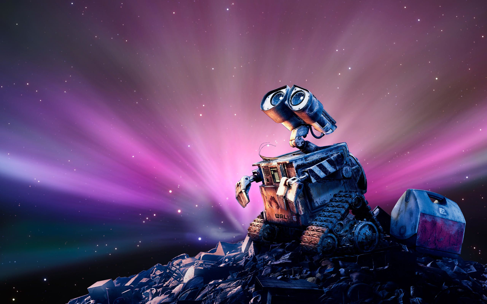
WALL-E
(2008)
Animation/Family 8.4 95%
Director : Andrew Stavton
Cast : Ben Burtt, Elisa Knight, Jeff Garlin
Famous Quote : "WALL-E!"- WALL-E
The most engaging silent movie since chaplin left the screen : There's no "human" dialogue for the first 40 min. It manages to be profoundly moving and thought provoking.
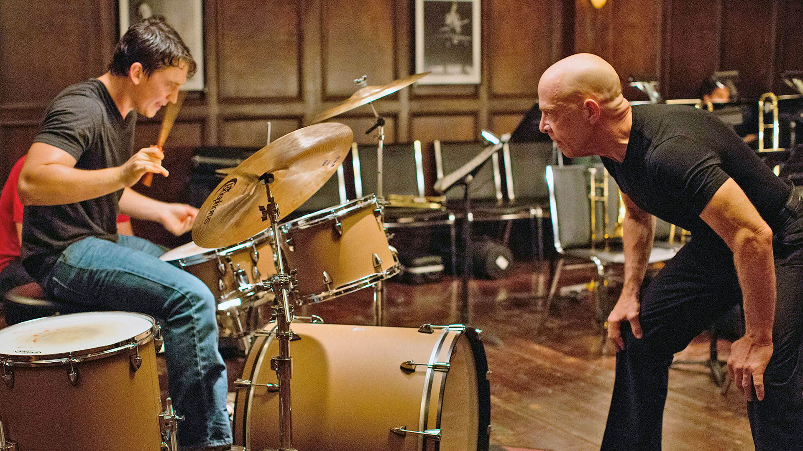
WHIPLASH
(2014)
Drama/Drama 8.5 94%
Director : Damien Chazelle
Cast : J.K. Simmons, Paul Reiser
Famous Quote : "Good Job"- Terence Fletcher
It is a movie about music, but it could just as well have been about an underdog sports team. One more thing - Teller's Intensity was outstanding.
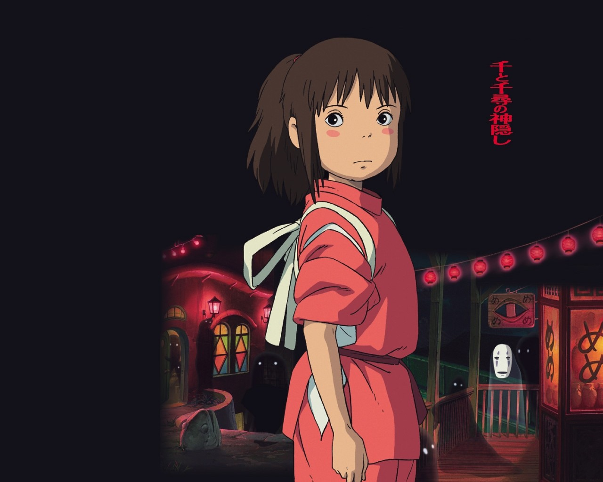
SPIRITED AWAY
(2001)
Animation/Fantasy 8.5 97%
Director : Hayao Miyazaki
Cast : Suzanne Pleshette, Rumi Hiragi
Famous Quote : "Something you wouldn't recognize. It's called love."- Kamaji
For a western world raised on disney movies, it was a bracing change of pace. Taking in bathovers, spirits of Shinto Folklore, and morality without clear-cut distinction of good and evil. It is ofcourse utterly beautiful, too-boundlessly imaginative, and steeped in gorgeous colour,and stunningly scored by Joe Hisaishi. Young hero, Chihiro, forced to fend for herself when her parents turned into pigs. Earn with boy-dragon-spirit Haku, her freedom from spirit-world.
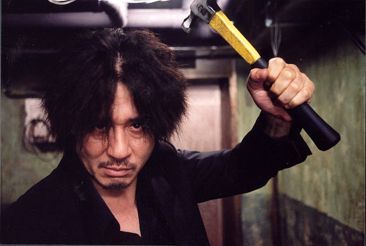
OLDBOY
(2003)
Thriller/Mysery 8.4 82%
Director : Chan-Wookpark
Cast : Choi Min-Sik, Kang Hye-Hing
Famous Quote : "Laugh and the world laaughs with you!!"- Oh Dae-Su
His revenge drama does extremity with a capital Feek. Torture through 15 years of solitary? Check. Hammer-Wielding violence? Check. Incest? Check, check. It's all part of the deliciously dark and stylishly executed journey.
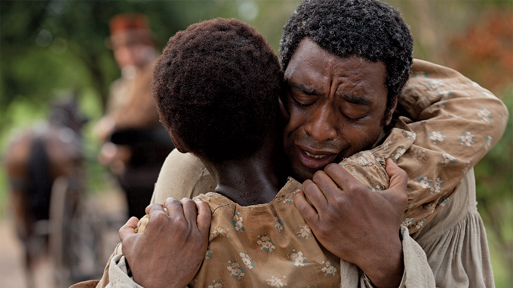
12 YEARS A SLAVE
(2013)
Drama/History 8.1 95%
Director : Steve McQueen
Cast : Chiwetel Ejiofor, Michael Fassbender
Famous Quote : "You will not live to see another day!"- Tibeats
It is based on true story of Solomon Northup drives straight to the heart of the cruelties of oppression.
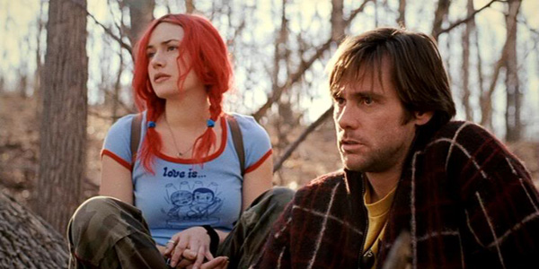
ETERNAL SUNSHINE OF THE SPOTLESS MIND
(2004)
Romantic/Sci-fi 8.3 93%
Director : Michel Gondry
Cast : Jim Carrey, Kate Winslet
Famous Quote : "Why do we fall in every woman I see who showed me the least bit of attention?"- Joel Barish
This film revived the career of Winslet. Jim Carrey's Joey races through his own mind to reverse a process by which all his memories of his failed relationshp with Kate Winslet's Clementine are to be erased.
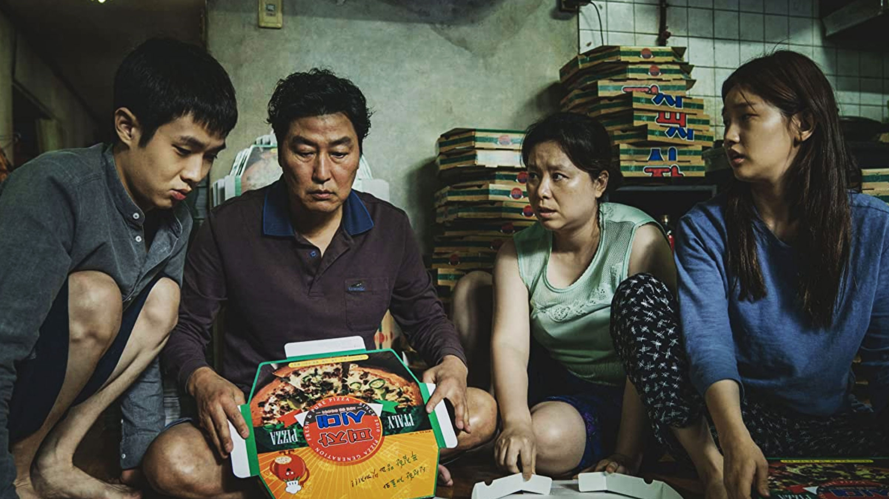
PARASITE
(2019)
Thriller/Comedy 8.6 99%
Director : Bong Joon-Ho
Cast : Cho Yoo-Jeong, Park So-Dam, Choi Woo-Shik<, Jeong Ji-So/p>
Famous Quote : "So we're all gathered here today to celebrate the reconnection of our phones and this bounteous Wi-fi."-
In Bong's flawless tragicomedy, a poor yet united family bluff their way into the lives of a wealthy seoul household. It took 4 Oscars including Best Picture.

MAD MAX : FURY ROAD
(2015)
Action/Adventure 8.1 97%
Director : George Miller
Cast : Tom Hardy, Charlize Theron
Famous Quote : "Remember me?"- Furiaso
Stripping the chase movie down to its raw essentials(the plot is basically : run away... then run back again!), Miller expertly built the narrative through some of the most astonishing and gloriously operatic action scene.
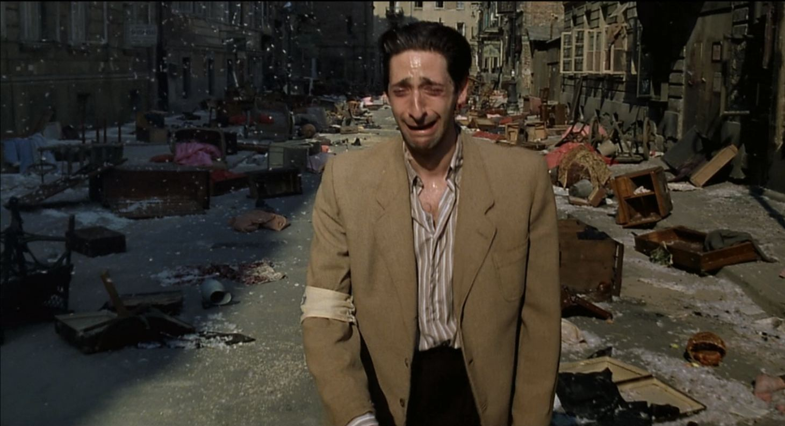
THE PIANIST
(2002)
War/Drama 8.5 95%
Director : Roman Polanski
Cast : Adrien Brody, Thomas Kretschmann, Emilia Fox
Famous Quote : "If I'm going to die, I prefer to die in my own home."- Brody
The Loneliness, guilt and impotenseon Brody's face is haunting. His performance is extraordinary. Well acted and dramatically moving.
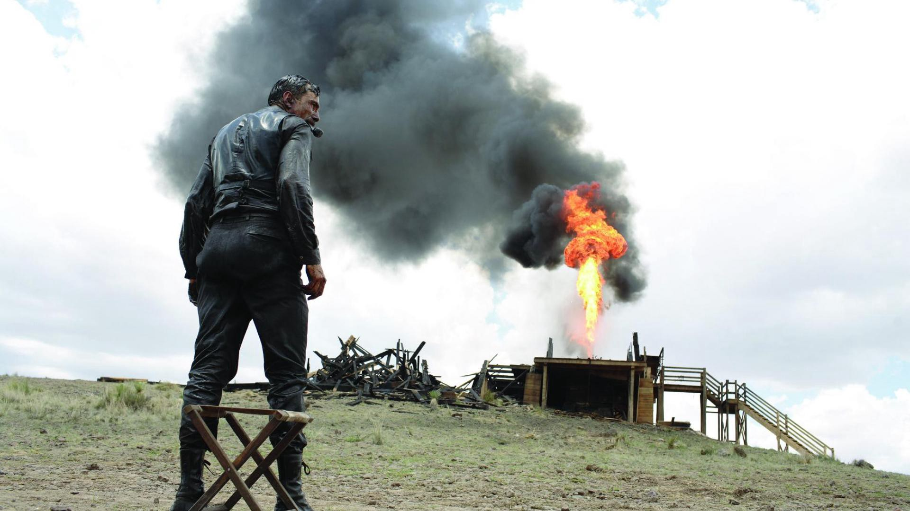
THERE WILL BE BLOOD
(2007)
Drama/Epic 8.1 91%
Director : Paul Thomas
Cast : Daniel Day-Lewis
Famous Quote : "I drink your milkshake! I drink it up!"- Daniel
If America were a prison, then oil man Daniel Plainview (Daniel day-Lewis) is a vampire. It is a portrait of a terrible, rapacious man.
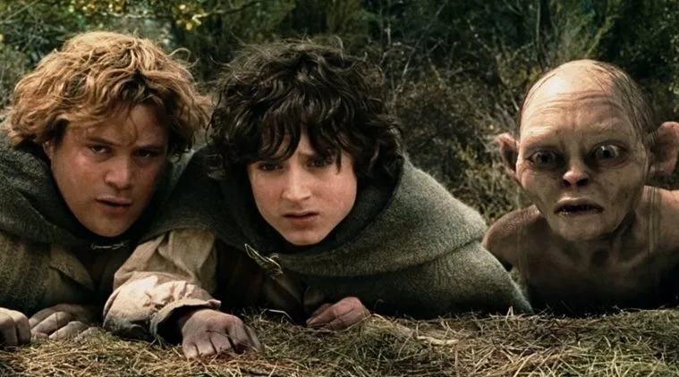
THE LORD OF THE RINGS : THE TWO TOWERS
(2002)
Fantasy/Adventure 8.7 95%
Director : Peter Jackson
Cast : Elijah Wood, Viggo Mortesen, Orlando Broom, Ian Mckellen
Famous Quote : "There won't be a Shire, Pip"- Merry
It starts and end in darkness. Pretty tell about the theme. It gives the pleasures of it is deeing Middle-Earth truly open out after the arrival at Rohan.
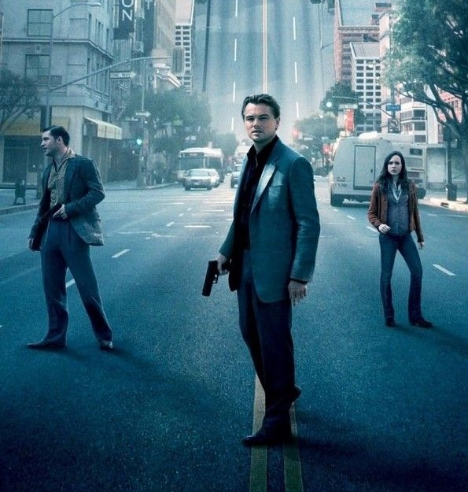
INCEPTION
(2010)
Action/Thriller 8.8 87%
Director : Christopher Nolan
Cast : Leonardo De Caprio
Famous Quote : "What do you want from us?"- COBB
The big climactic action sequence is so huge it takes up almost half the movie and is actually three big action sequences temporally nested inside each other.
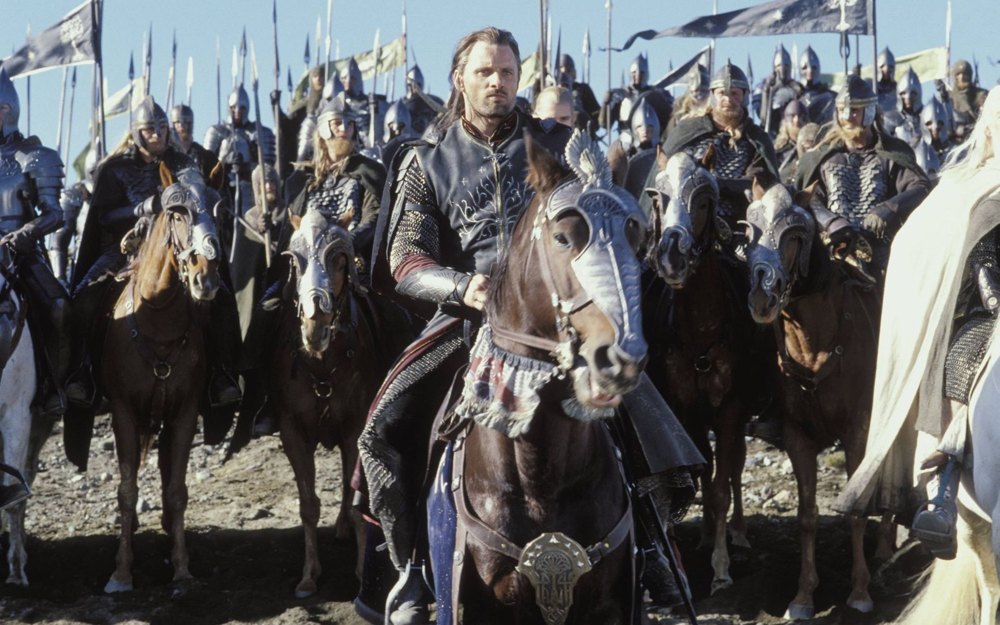
THE LORD OF THE RINGS : RETURN OF THE KING
(2003)
Fantasy/Adventure 8.9 93%
Director : Peter Jackson
Cast : Elijah Wood, Viggo Mortensen, Ian Mckellen, Orlando Bloom
Famous Quote : "That still only counts as one."- Gimli
It has some of most colosal and entertaining battle scenes ever mounted. It has that fantastic dramatic - ironic twist when gollum saves the day through his own treachery.
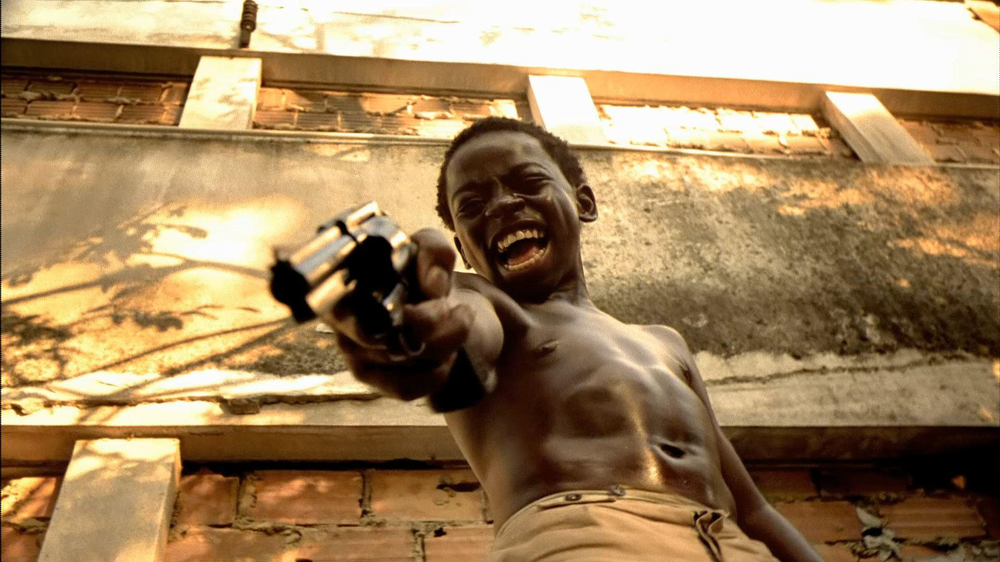
CITY OF GOD
(2002)
Crime/Drama 8.6 91%
Director : Fernando Meirelles
Cast : Alice Braga, Leandro Firmino, Seu Jorge
Famous Quote : "It was like a message from God : Honestly doesn't pay, Sucker"- Rocket
Difficult to watch but hard to look away from. The performances many from non-pros are terrific. It shows how kids are drawn into life of crime.
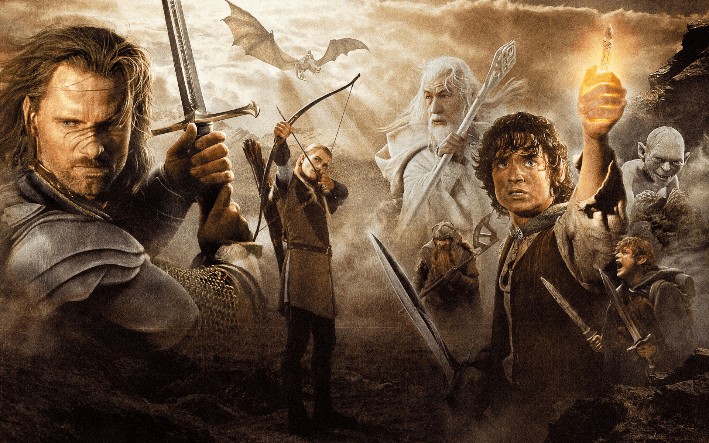
THE LORD OF THE RINGS : THE FELLOWSHIP OF THE RING
(2001)
Fantasy/Adventure 8.8 91%
Director : Peter Jackson
Cast : Elijah Wood, Ian Mckellen, Viggo Mortensen, Orlando Bloom
Famous Quote : "You cannot pass! I am a servant of the secret fire, wilder of the flame of anor. The dark fire will not awail you, flame of valun go back to the shallow you shall not pass"- Gandalf
It isn't a fairytale but a historical epic which just happens to be set in an alternative world. Masterfully paced, the movie builds slowly, introducing the mythology, habitats and lifestyles of Tolkien's creatures.
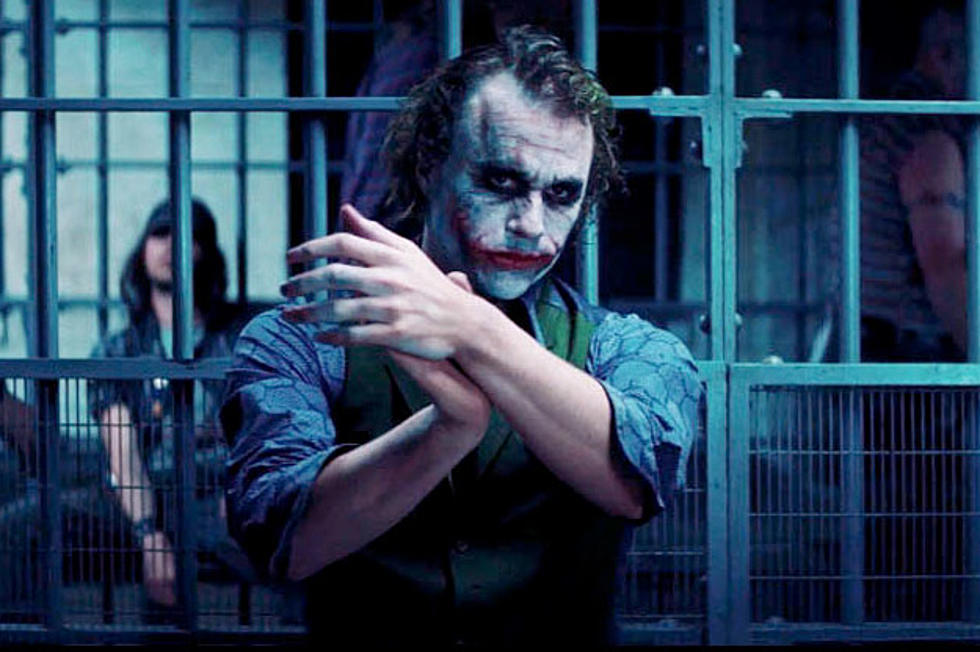
THE DARK KNIGHT
(2008)
Action/Adventure 9 94%
Director : Christopher Nolan
Cast : Christian Bale, Heath Ledger
Famous Quote : "Some people just want to watch the world burn"- Alfred Pennyworth
Christopher Nolan's batman begins sequel works wonders because he never saw it as a superhero film. You get a bloke dressed as a bat and a psychotic clown in a police interrogation room. Ledger's performance is monumental, but The Dark Knight lives up to it and the Batbike is kinda cool, too.